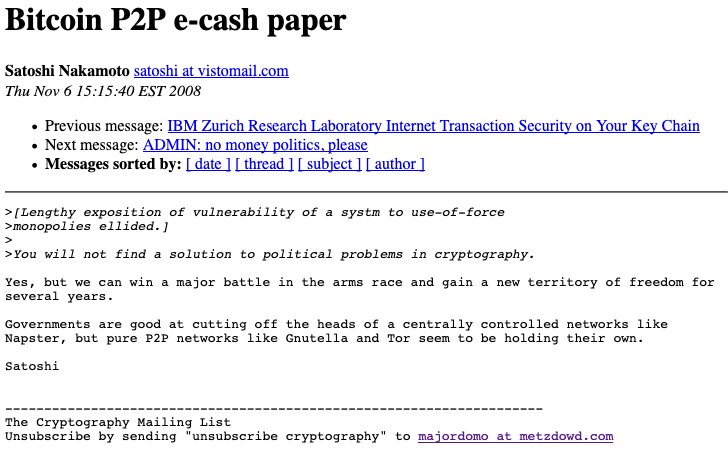

2. The Design and Implementation of the Bitcoin Protocol
In the previous chapter, we examined the historical, social, and cultural contexts of blockchain. In the second section we look at the creation and proliferation of Bitcoin as the first large-scale application of blockchain technology. We also explore how the advent of the Bitcoin project resulted in the development of blockchain technology as a coherent technical system.
The influence of Bitcoin on the blockchain domain was not limited to the technical characteristics of its protocol. Its development methods, distribution policy, and communication channels are the patterns that allowed blockchain technology to begin to enter the collective imagination. By retracing the timeline of the Bitcoin project, by focusing on the ways in which it was developed, implemented, published and transferred to the public domain, we introduce the constituent elements of blockchain and consolidate the framework of its analysis as a social phenomenon.
2.1. The publicising of the Bitcoin project
In August 2008, the bitcoin.org domain name was registered on anonymousspeech.com, a website that allows domain names to be registered anonymously. On 31 October 2008, an unknown entity using the pseudonym Satoshi Nakamoto published a message entitled 'Bitcoin P2P e-cash paper' on the metzdowd.com cryptography-themed mailing list. He announced that he was working on a new, purely peer-to-peer electronic payment protocol without the need for a trusted third party. In presenting the main features of the protocol, he used the key concepts of Hashcash proof-of-work and peer-to-peer networking. His protocol aimed to avoid 'double spending', the simultaneous double use of any information object, in this case money.
The author referred to a document that was available for download at http://www.bitcoin.org/bitcoin.pdf called Bitcoin: A Peer-to-Peer Electronic Cash System. The document was precise and concise, and it observed the formal structure and norms of a scientific publication. It posed the question of how to do away with all forms of trusted third party, whether financial and governmental institutions or centralised servers, in the context of electronic financial transactions.
The demonstration covered 9 pages and was divided into 11 sections with alternating text, diagrams, models and formulae outlining the technical details of the proposal. The bibliography was succinct, citing Wei Dai's B-money project, the work of Haber and Stronetta, and Ralph Merkle's Hashing functions. Despite the conventional format of his paper, the author did not mention affiliation with any organisation and only provided a URL and an email address. Other researchers associated with cypherpunk, such as Adam Back in 2002, had presented their research in a similar way.
On 1 November 2008 version 0.1.5 of the Bitcoin software was made available for download on Bitcoin.org.
Two days after the publication of the paper on the prototype Bitcoin software on the Cypherpunk mailing list, initial exchanges began between fewer than a dozen respondents. Some of the names, such as James A. Donald, were probably pseudonyms, but most respondents revealed their real names. They were cryptographers, experts in artificial intelligence and security like Ray Dillinger, PGP developers like Hal Finney, and specialists in messaging infrastructure like John R. Levine.
Some had long been working on the issue of electronic transaction protocols: Hal Finney had published on the so-called reusable proofs-of-work system, RPOW, in 2004. Having studied, prototyped, and tested recent developments in the field such as E-gold, B-money and DigiCash, all remained sceptical as to the technical feasibility of the code. The social feasibility of the project also seemed dubious, since all previous experiments had led either to commercial failure, as in the case of DigiCash, or court action and imprisonment, as in the case of E-gold. The article was researched in the manner of a specialist academic text aimed at advancing knowledge and awareness of the subject.
Members of the list began to send emails to each other. Satoshi Nakamoto answered many questions and asked others. All the possible issues surrounding the protocol were probed: scalability, privacy, legality, information storage methods, bandwidth requirements, potential responses from government institutions, etc. The interlocutors asked for more formal descriptions, proposed improvements and put forward hypotheses. The discussion not only verified the
The Design and Implementation of the Bitcoin Protocol 287
feasibility of the technical protocol, it anticipated the social phenomenon that it would engender (Figure 1).

Figure 1. Screenshot of a message from Satoshi Nakamoto on 6 November 2018.
2.2. The collective design process of the Bitcoin protocol
While these discussions were taking place, the Bitcoin project was registered on SourceForge.net, a collaborative platform for free open-source software development and distribution. Version 0.1.5 served as the basis for further work by the participants. Ray Dillinger checked the code and Hal Finney performed a security audit. The first time-stamped block, today often called 'block 0' or 'Genesis block', was created on 3 January 2009 at 18:15:05 GMT'. It contained 50 Bitcoins awaiting transaction. This was the formal basis for the transaction chain in the Bitcoin protocol.
Next to the usual information present in the first block, Satoshi Nakamoto entered the following text: 'The Times 03/Jan/2009 Chancellor on brink of second bailout for banks'. The text was a headline in the 3 January 2009 issue of the British newspaper The Times. The article reported on how the efforts of the British government to stimulate the economy after the 2008 financial crisis had failed. Inscribed into the very backbone of Bitcoin, this message was a statement of intent.
On 9 January 2009, the first alpha version of the Bitcoin code was released on SourceForge (version 0.1.0). The code was distributed under the MIT/X11 licence, which is compatible with the GPL (General Public Licence). This implied that the authors of the protocol agreed that any person receiving the code had unlimited rights to use, copy, modify, merge, publish, distribute, and sell it as well as to change its licence. The only obligation was that the initial conditions of the MIT license had to be included. On 12 January 2009, Hal Finney made an announcement on the metzdowd.com mailing list. He set out the main requirements (e.g., the number of Bitcoins) and addressed the risk that Bitcoin might be of interest to no one as it had no intrinsic value.
On 13 January 2009, a test transaction took place between Satoshi Nakamoto and Hal Finney. The amount transacted was 10 Bitcoins.
After its initial publication, the code became stable and Hal Finney stopped working on the project. Several technical discussions took place on the metzdowd.com mailing list. In one of the messages, John Gilmore of the Electronic Frontier Foundation raised questions about the consequences of such a system for the environment.
On 11 February, Satoshi Nakamoto presented Bitcoin at the Peer to Peer Foundation Forum. Some interlocutors compared it to the OpenCoin project, a free-license version of the electronic money system invented by David Chaum. Satoshi Nakamoto explained how many people viewed electronic money as a lost cause, since all companies involved in the field since the 1980s had gone bankrupt. Using the example of David Chaum's eCash ('the old Chaumian central mint stuff'), he theorised that it was the centralised nature of these systems which had sealed their fate. Nakamoto presented Bitcoin as a distributed global database to which additions could be made with the consent of the majority based on a set of rules to be followed by everyone.
In August 2009, a Finnish developer, Martti Malmi, put forward the first modifications to the code published in SourceForge. In October 2009, Bitcoin's first trading website was registered under the name New Liberty Standard. Using an equation that calculated the cost of the electricity required to run a computer generating Bitcoin, the website established its value at USD 1 = BTC 1309.03. Martti Malmi was the first person to convert Bitcoin into US Dollars. He sent 5050 Bitcoins to New Liberty Standard and received USD 5.02 via PayPal in return.
Thanks to an increasing number of contributions to the Bitcoin project through SourceForge (mainly by Satoshi Nakamoto, Martti Malmi, and Gavin Andresen, a developer based in Massachusetts), version 2.0 was eventually released, followed by version 3.0.
2.3. Community ownership of the Bitcoin project
New chat channels appeared dealing specifically with the subject, including the forum BitcoinTalk and the #bitcoin-dev channel on the Freenode IRC network. Magazine articles were written, and test purchases of actual items were made. The announcement of the release of v3.0 of Bitcoin on the Slashdot news website attracted the attention of a wider audience of developers.
In January 2011, the Electronic Frontier Foundation website introduced Bitcoin in an article entitled Bitcoin -- A Step Toward Censorship-Resistant Digital Currency. At the end of the article, the Foundation announced that it would henceforth accept donations in Bitcoin. The next month, the SilkRoad website came into existence, selling all manner of illicit products. Items could only be purchased using Bitcoin.
In December 2010, as a result of the controversial revelations it disseminated, the Wikileaks organisation was subjected to a 'financial blockade' by VISA, MasterCard, Bank of America, PayPal, and Western Union. An article was published in PCWorld magazine with the title Could the Wikileaks Scandal Lead to New Virtual Currency? On the bitcointalk forum, Satoshi Nakamota was trying to temper the enthusiasm of the participants regarding this issue. According to him, Bitcoin was still only at the beta testing stage and could not be scaled up too quickly. He also expressed concern on chat pages about the close interest government institutions were showing in Bitcoin.
In June 2010, Wikileaks announced in a tweet that it would be accepting anonymous donations in Bitcoin. During the same period, and citing doubts about the legal aspects of Bitcoin, the Electronic Frontier Foundation decided to stop accepting donations in the cryptocurrency. In October 2011, Joshua Davis published a long article in The New Yorker describing the thorough investigation he had conducted into who was actually behind the pseudonym of Satoshi Nakamoto.
This publicity generated rapid growth in the number of transactions, and consequently the number of contributors. Citing problems accessing SourceForge from countries sanctioned by the US Office of Foreign Assets Control, such as Cuba and Iran, the community decided to migrate the project to another, similar type of platform: GitHub. As the Bitcoin protocol was licensed under MIT, it could be forked, i.e., be split and a new protocol created from the existing code. As a result, many other electronic currencies based on Bitcoin's protocol began to emerge, such as Netcoin, Litecoin, Ixcoin, Diskcoin, Bandwidth, and Cyclecoin, which were then themselves forked. An example of a fork path would be: Bitcoin → Litecoin → Junkcoin → Lukycoin → Dogecoin. Most of these currencies had a very limited lifespan.
Bitcoin Magazine was created by Vitalik Buterin, of Russian origin, and Mihai Alisie, from Romania. Bitcoin smartphone payment services such as Bitpays appeared, and conferences on the subject were held in locations including New York, Prague, and London. In January 2012, Bitcoin was featured as the main plotline of the third episode of CBS's TV series 'The Good Wife'. The episode was called 'Bitcoin for Dummies'.
The high levels of media attention resulted in an explosion in the number of Bitcoin transactions and the number of people contributing to the project. The value of Bitcoin was rising, and a number of trading platforms began to appear. In 2012, the CoinBase platform enabled people to buy and sell Bitcoin over the Internet by bank transfer. The Bitcoin Foundation was created in September 2012. The challenges it faced were twofold: to restore confidence in the system after its reputation had been tainted by perceived association with fraud and crime; and to accelerate the global growth of Bitcoin through the regulation and protection of cryptocurrencies and by promoting the Bitcoin protocol. Openly based on the models of non-profit organisations such as the Linux Foundation, the Bitcoin Foundation was mainly funded by donations from for-profit corporations like Mt Gox, Bitinstant, and CoinLab, whose business relied on the ongoing stability and maintenance of the Bitcoin code and its publication under a free licence.